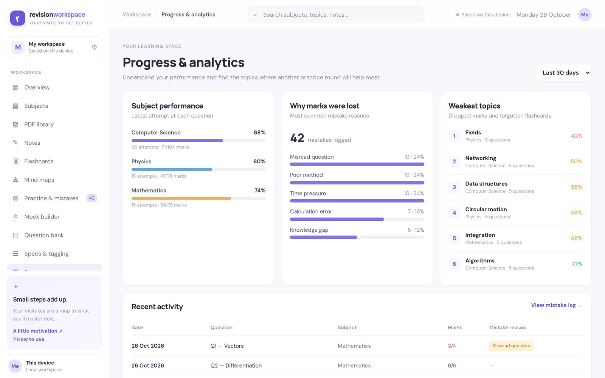
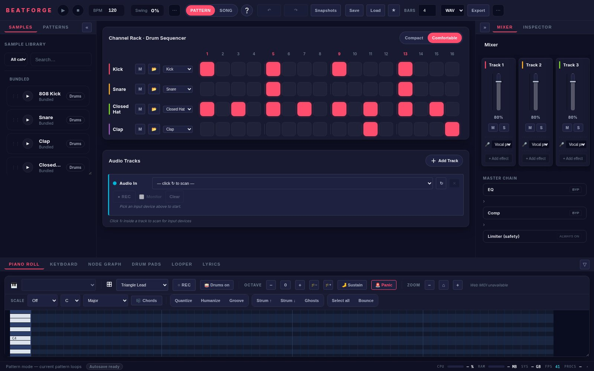
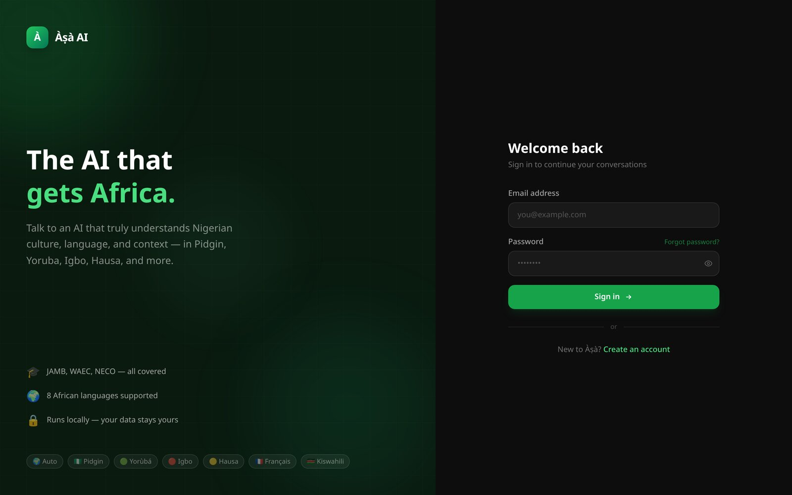
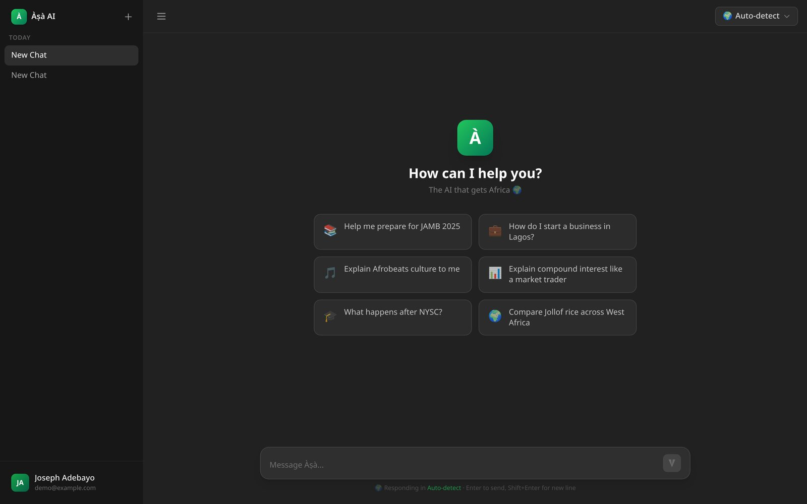
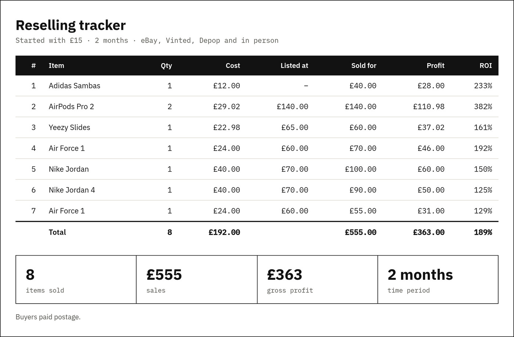
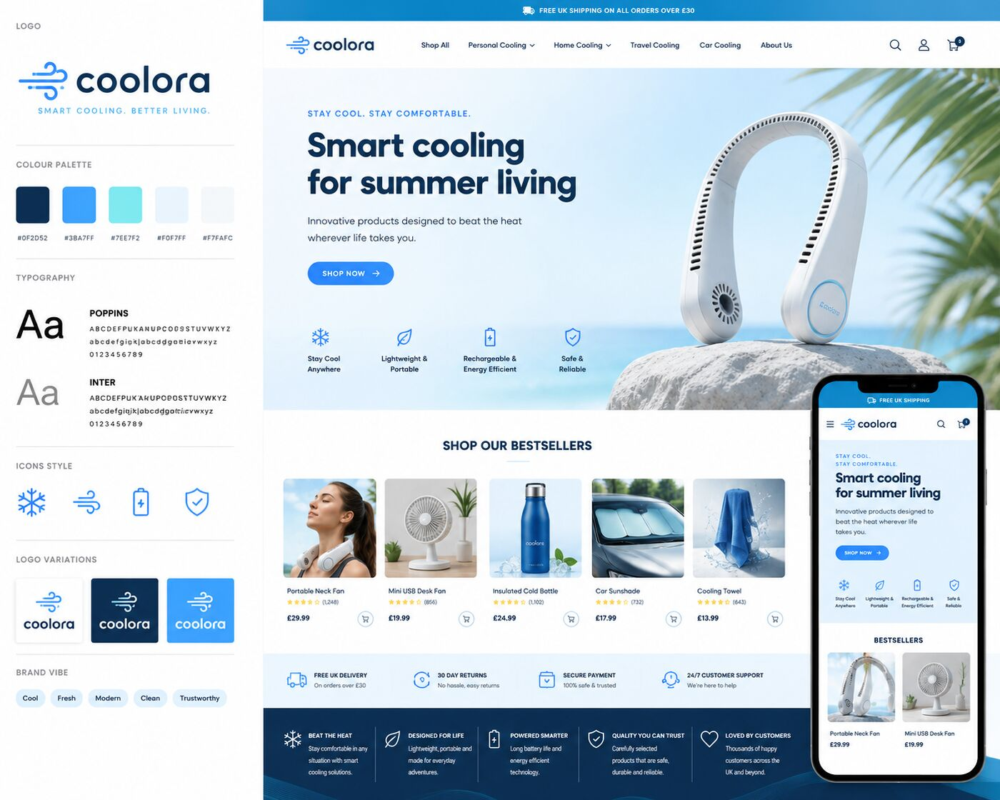
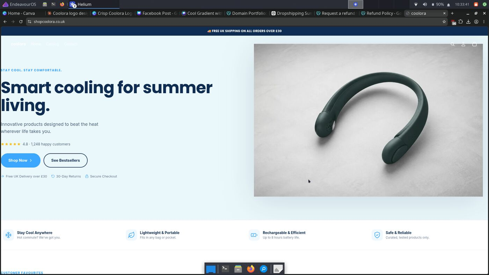
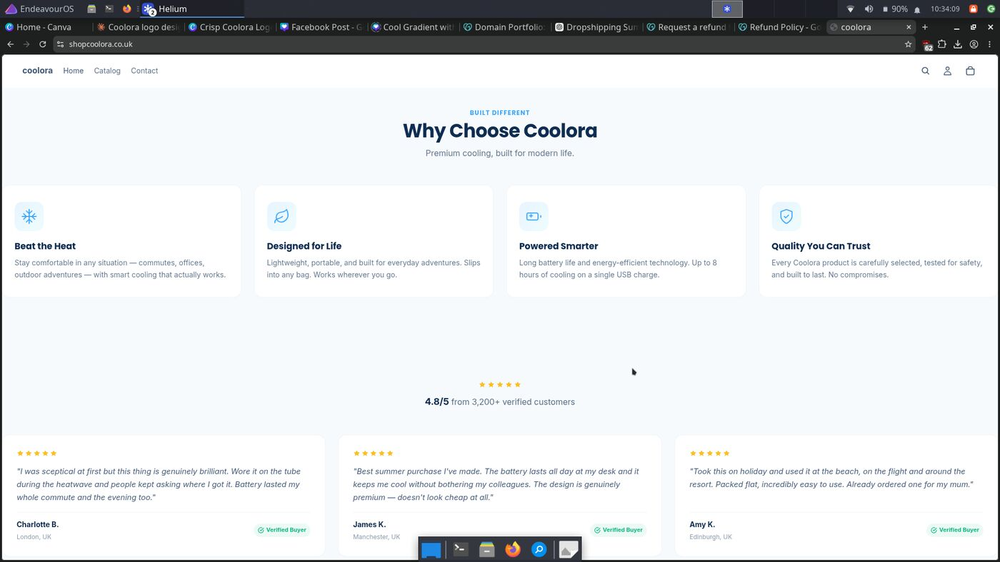
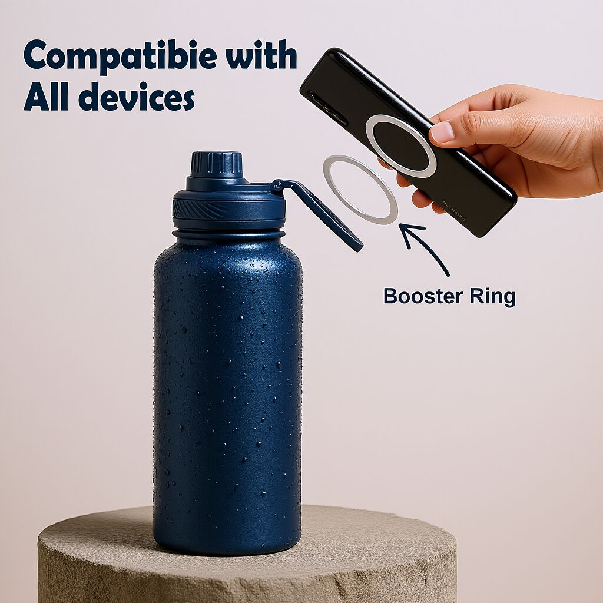
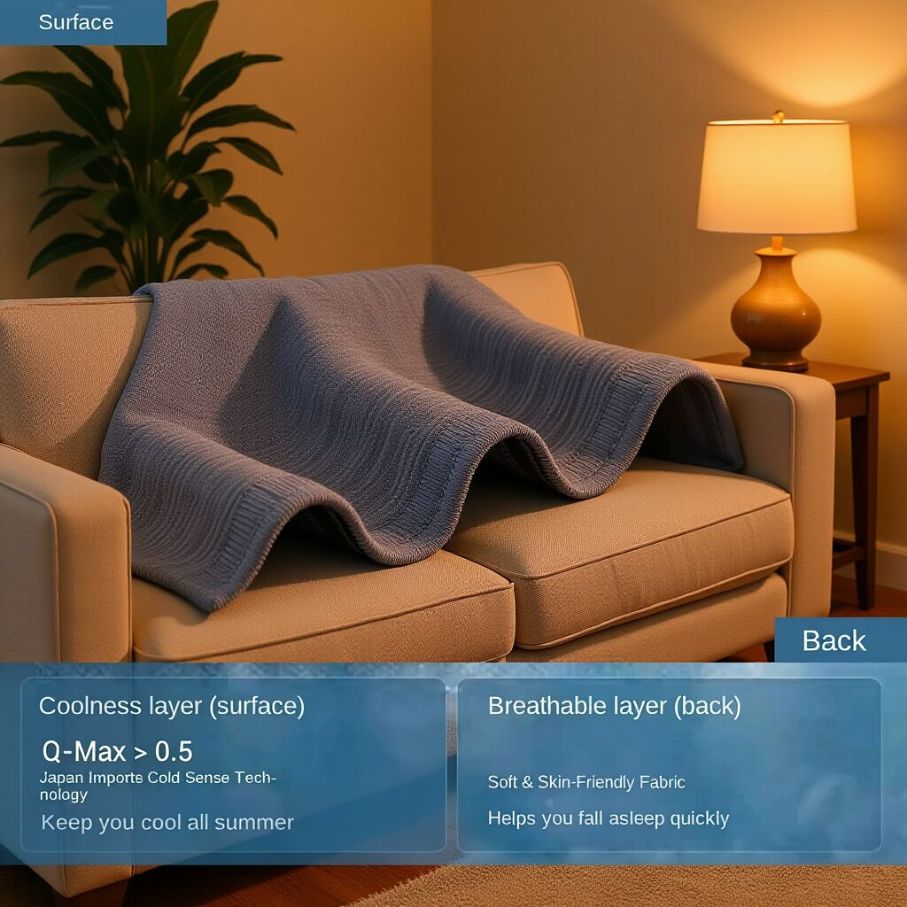

A revision web app for A-level students. You can annotate past papers with a stylus, record your marks, tag the mistakes you make and link them to your notes, so you can see which topics you keep getting wrong.
I built it because the tools I was using for my own revision didn't do this. It runs on Vercel with a Supabase database, and it can find the questions in a past paper PDF automatically and link them to the mark scheme.
I came up with the idea, designed the features and tested everything. I can't write React or TypeScript yet, so the code, including the past-paper parser, was written by an AI coding agent that I directed.

A music-making app (a DAW) that runs on the desktop. It has a drum sequencer, a piano roll, a mixer with effects, a song arrangement view and WAV export. It also works with a MIDI keyboard.
It runs on Electron and Tone.js. I planned it in phases, adding one feature at a time, and tested each one. The code was written by an AI coding agent that I directed.

An AI assistant made for African users. It can reply in Pidgin, Yorùbá, Igbo, Hausa, French and Kiswahili, and it knows about things like JAMB and WAEC exams.
It runs a language model on your own computer with Ollama, so your chats stay on your device. The front end is Next.js and the back end is a Python FastAPI server. The code was written with an AI coding agent that I directed.

RevisionPilot is the web app I'm building for my A-level Computer Science NEA. It makes a personalised revision timetable based on a student's school timetable, subjects and other commitments.
I'm building it with Python, Flask, Jinja and SQLite, with an HTML/CSS front end. The main part is an algorithm that decides when to schedule revision sessions based on priority, deadlines and how much free time the student has.

A web app that checks a link for signs of phishing, like brand names in the subdomain, suspicious endings such as .tk, and IP addresses instead of domain names.

I started reselling with £15 to learn how buying and selling actually works. My first deal was a pair of Adidas Sambas: I bought them for £12 and sold them for £40, a £28 profit.
Instead of taking the money out, I reinvested it into more stock: Nike Jordans, Air Force 1s, Yeezy Slides and AirPods. I sell on eBay, Vinted, Depop and in person, and I handle the sourcing, pricing, listings, customer messages and shipping myself.
How it works
I look for products that sell for more than I can buy them for, check what they actually go for, price them to sell while keeping a margin, then put the money from each sale into the next buy.
Numbers
I track every deal in a spreadsheet. Across 8 items, including the Sambas, I spent £192 and sold for £555, which is £363 gross profit. Buyers paid the postage.
What I Learned
You don't need much money to start, but you do need to pick the right products and get your money back quickly. How fast I could sell something and reuse the cash mattered as much as the profit on each item. It was also the opposite of Coolora: no brand and no website, but people already wanted what I was selling.

What I Built
I built Coolora from the ground up using Shopify, taking responsibility for the product pages, storefront design, shipping and packaging setup, and the development of a complete brand identity.
I sourced products through Eprolo and drove traffic to the store with organic social media content, without any paid ads. The store was fully launched and generated visitor traffic, although it did not ultimately convert into sales.
What I Learned
Running Coolora taught me far more about marketing and business than I initially expected. I learned about positioning a product for the right audience, the importance of trends and seasonality, and how these factors can directly influence consumer buying behaviour.
The project also gave me a more realistic understanding of the financial side of e-commerce. I experienced first-hand what it means to invest both time and money into an idea without knowing whether it will generate a return.
Looking back, I believe the lack of sales was partly due to limited resources being available for advertising and testing. Generating traffic alone is not enough — understanding the audience, testing different approaches and giving campaigns enough opportunity to learn are all important parts of improving conversion.
The biggest lesson I took away from the project was the importance of validating demand before investing heavily in an idea. Testing interest early can provide valuable evidence about whether there is genuine demand before committing significant time and money.



